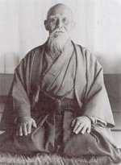

Morihei Ueshiba (O-Sensei)
de grondlegger van het aikido
door Dennis de Booij
Op 14 december 1883 werd Morihei Ueshiba geboren als eerste van de vier kinderen van Yoroku Ueshiba, een gerespecteerde boer en lid van de dorpsraad in het vissers- en landbouwdorp Tanabe in de Wakayama prefectuur waar hij met zijn vrouw Yuki Itokawa woonde. Hoewel Morihei Ueshiba een zwakke gezondheid had, bezat hij een groot doorzettingsvermogen. Morihei's vader zorgde er dan ook voor dat zijn zoon, naast de boeddhistische studie bij een lokale tempel, ging zwemmen en sumo worstelen om zijn fysieke gestel te versterken.
In 1901 vertrok de achttienjarige Ueshiba naar Tokio om daar een winkel in kantoorartikelen te openen. Hier groeide zijn interesse in budo: hij begon met jiu-jitsu bij de Kito ryu dojo (waar ook Jigoro Kano, grondlegger van het judo, ook leerling was geweest) en ken-jutsu (zwaardvechten) bij de Shinkage Ryu dojo. Toen hij echter ziek werd keerde hij terug naar Tanabe waar hij herstelde en later ook trouwde met een jeugdvriendin Hatsu Itokawa. In 1903 werd hij opgeroepen voor militaire dienst en belande hij in de Japans - Russische oorlog. Toen hij terug thuis kwam bouwde zijn vader in een schuur een dojo en werd de welbekende jujutsu en judo leraar Takaki Kiyoichi ingehuurd. Later in Hokkaido zou Morihei Ueshiba ook Sokaku Takeda ontmoeten, een grootmeester in de Daito-ryu Aiki Jutsu en een strenge, zelfs geweldadige, leraar. Ueshiba werd een toegewijd leerling van Takeda en ontving het menkyo-kaiden (bewijs van meesterschap). De stijl van Takeda zou de basis gaan vormen van het aikido van vandaag de dag.
In 1919 vertrok hij uit Hokkaido en een jaar later ontmoette hij de leider van de religieuze Omota-Ky sekte, Onisaburo Deguchi in Ayabe. De leer van Onisaburo, een pacifist en een voorstander van geweldloos verzet en universele ontwapening, zou later een diepe invloed hebben op de spirituele kant van Ueshiba en het aikido. Vanaf 1925 werd zijn stijl dan ook meer spiritueel en benadrukte hij het idee van ai (harmonie) en budo als manier om harmonie te bereiken en benadrukte hij tevens dat iedere beweging voortkomt uit de eenheid van ki (energie), lichaam en geest. In 1927 richte Morihei Ueshiba zijn eigen dojo, de Kobudan, op in Tokio (waar nu de Hombu dojo, het hoofdkwartier van de Aikikai Foundation is gevestigd). In 1930 woonde Jigoro Kano een demonstratie van Ueshiba bij. Kano was hiervan zo onder de indruk dat hij enkele van zijn meest getalenteerde leerlingen (o.a. Minoru Mochizuki) naar Ueshiba stuurde om het aikibudo, zoals aikido toen nog genoemd werd, te bestuderen.
In 1942 trok Ueshiba zich terug op het platteland in het dorp Iwama. Hier perfectioneerde hij zijn technieken en de spirituele filosofie van het Aikido (de weg - do - van het in harmonie - ai - komen met de energie - ki -). Het aantal aikido leerlingen breidde zich na de Tweede Wereld oorlog snel uit en Ueshiba stond nu bekend als O - Sensei, de grote leraar. Ueshiba overleed op 26 april 1969 aan de gevolgen van leverkanker. Zijn laatste boodschap aan zijn leerlingen was:
"Aikido is voor de hele wereld. Train niet voor egoïstische redenen, maar voor alle mensen ter wereld."